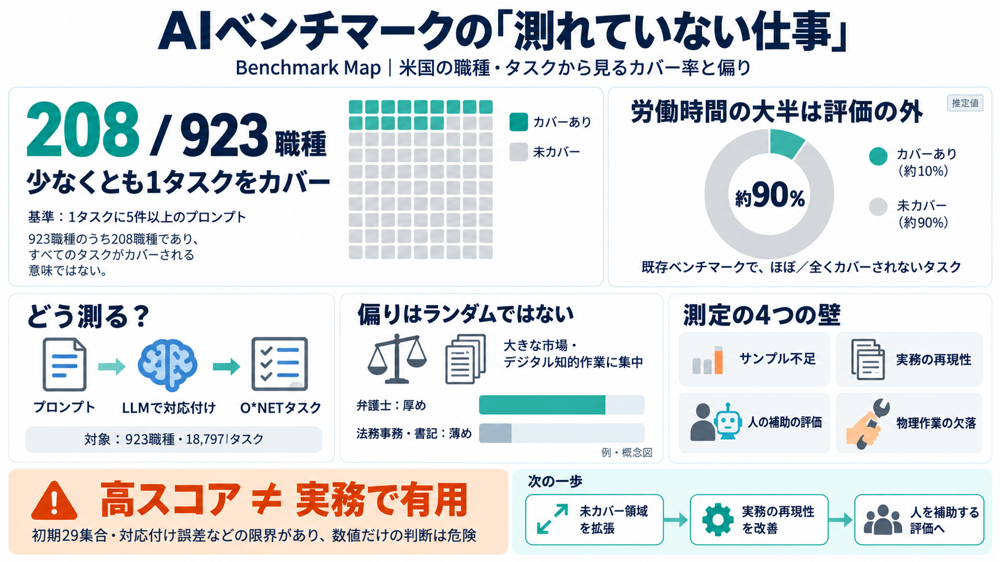

A benchmark map of the US economy | Mercor
Each point shows the estimated probability that an O\NET task with a given AI-exposure tag belonging to an occupation wi…

AIベンチマーク（モデル能力測定）が、米国の職種・タスクをどれだけ代表しているかを「地図」で可視化する。
O*NETには923職種・18,797タスクがあるが、AIベンチマークが全タスクを網羅するとは限らない。特に「デジタルで完結しやすい知的作業」は厚くなりがちだ。
最初のベンチマーク集合では、923職種のうち「少なくとも1つのタスクが5プロンプト以上でカバー」されるのは208職種にとどまる。さらに、カバー対象となるタスクは限定的だ。
推定では、米国の労働時間の約90%が「既存ベンチマークによるカバーがほとんどない／全くない」タスクに費やされている。評価が現実の一部しか見ないリスクがある。
カバーの偏りはランダムではなく、AIコミュニティが取り組みやすい「大きな市場（賃金総額が大きい職業）」に寄る傾向が示される。例：法務でも、弁護士は厚めで事務職・書記は薄くなりうる。
LLM判定で、ベンチマークのプロンプトをO*NETタスクへ対応付ける。対応付いたプロンプトがそのO*NETタスクに対して「少なくとも5件」ならcoveredと数える。
頻出タスクが支配すると歪むため、O*NETの分類で重み付けして職務別スコア化を試みる。ただし、対象O*NETタスクのうち「十分なベンチマーク数がある」割合が3分の1未満で、頑健性に限界が示唆される。
測れていない現実が残るため、「ベンチマークで良いスコア＝実務で有用」とは限らない。企業選定や政策予測で、重要な判断を誤る可能性がある。
同じ法務領域でも、AIに曝されやすいタスクは弁護士側で厚く測られ、法務事務職や裁判所書記は薄くなり得る。結果として「領域＝均一に測れる」は成立しにくい。
地図は「現実の仕事を測れていない現状」を定量化し、限界も明示している。一方で、初期29集合への依存や対応付け誤差があり、意思決定に数値だけを持ち込むのは危険だ。
今後はベンチマーク追加によりカバーを拡張しつつ、タスク品質・評価の忠実度・augmentation中心設計・物理要素の扱いまで進化させる必要がある。
Each point shows the estimated probability that an O\NET task with a given AI-exposure tag belonging to an occupation wi…
You are an expert occupational mapper. Map benchmark instructions directly to all relevant leaf paths in the complete su…
The International Labour Organization (ILO) and World Bank released a joint study for the World Development Report 2026,…
1. The O\NET database, which enumerates tasks associated with around 800 unique occupations in the US. 2. Our own usage …
Eisfeldt et al. (2023) created the genaiexp\_estz\_total and genaiexp\_estz\_core metrics. The authors build on Eloundou…